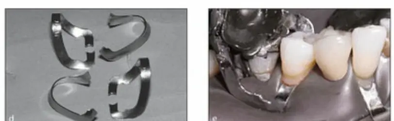
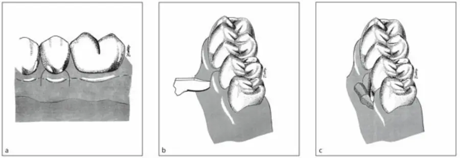

نسخه استخراجشده؛ ترجمه یا تأیید علمی انجام نشده است. وضعیت: captured
بیماری روی پرمولر اول و دوم بالا دو ضایعهی ابفرکشن کنار هم دارد و میخواهی هر دو را در یک جلسه ترمیم کنی. کلمپ 212 اول که نشست، برای کلمپ 212 دوم روی دندان کناری جایی نماند. چه کنی؟

دو کمان کلمپ 212 نمیگذارند دو کلمپ دستنخورده روی دو دندان کنار هم بنشینند. راه: دو کلمپ 212 را تغییر بده و از هر کدام یک کمان را ببر، طوری که کمان باقیماندهی یکی رو به راست و دیگری رو به چپ باشد. هر دو را با کامپاند ثابت کن تا دو ترمیم همزمان انجام شود.
وقتی حفره دستکم تا حدی زیر لثه است، کلمپی روی همان دندان نمیگذارد ورق روی مارجین بالا بیاید. فکهایی که رو به اپیکال شیب دارند این کار را خوب میکنند؛ مثلاً کلمپ W1A (نسخهی بیبال کلمپ 1A) حتی روی ریشهی ثنایای میانی بالا. لیگاتور نخ دندانی هم که در لینگوال از سینگولوم پایینتر برود و در فاسیال گره بخورد، لبهی ورق را رو به سرویکال میبرد.
اگر لثهی آزاد فیبروز است و کنار نمیرود، کشیدن زورکی با فک کلمپ پارهاش میکند. بهتر است یک یا دو برش کوچک بزنی تا بافت بیپارگی کنار برود.

ورق روی سطح محدب خوب سیل میکند؛ ولی اگر لبهاش از روی فرورفتگی ریشه، مثلاً نزدیک فورکیشن، بگذرد، بزاق نشت میکند. درز را با Cavit، مادهی موقتی که با رطوبت سخت میشود، ببند.
نکتهی طلایی: بیشتر وقتها برش لازم نیست؛ لثهی آزاد سالم آنقدر کشسان است که فک کلمپ 212 آن را بیپارگی کنار بزند.